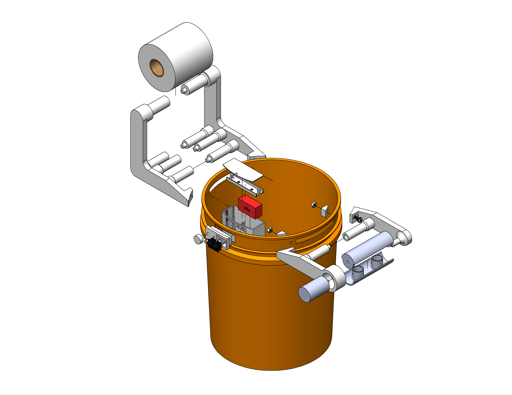
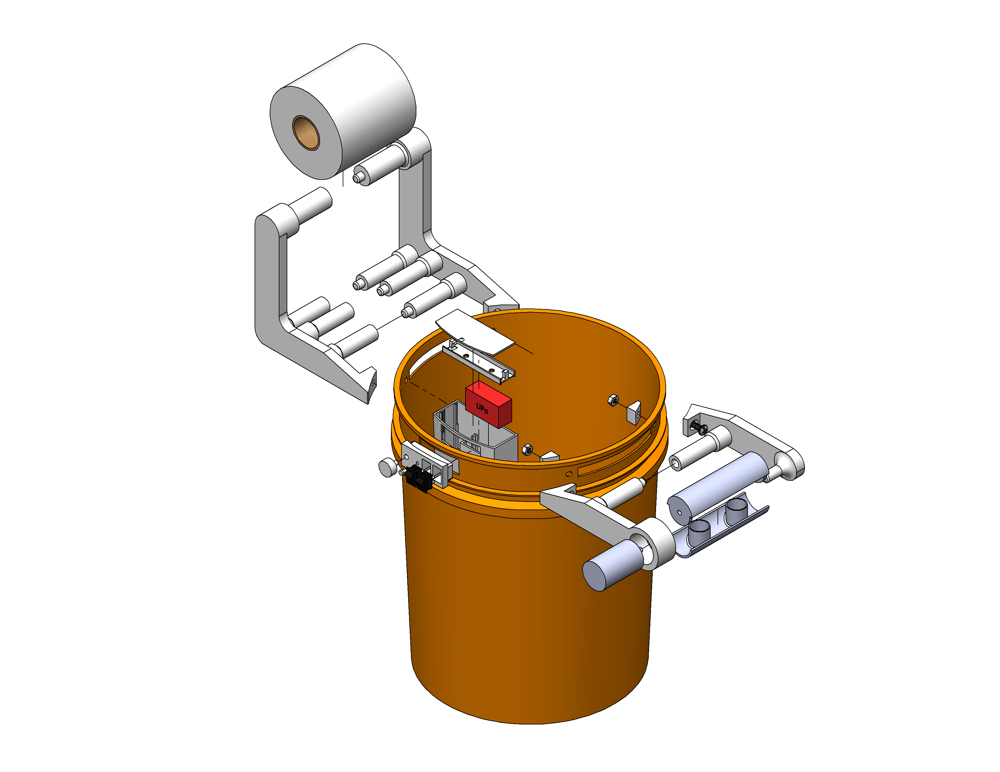

Ok. I already know what you're thinking; why did I even make this? Fair question. Let me provide some context.
At the start of 2020, the novel Coronavirus for some reason caused mass panic buying of toilet paper. Out of all things...toilet paper. I had this poop bucket idea for the longest time, but now more than ever my product needed to become a reality. The poop bucket efficiently wipes your ass by continuously using each square as opposed to using only a small dot of a toilet paper square using conventional wiping methods. The poop bucket also conveniently stores the used side onto another roll facing inwards, revealing a brand-new fresh side. This means that the poop bucket at least doubles the use per toilet paper roll, saving you money and time fighting over toilet paper at the store.
The poop bucket allows users to poop and wipe their ass hands free into a bucket. The poop bucket is operated by first turning on the LED lights switch. This switch powers a set of LED strips as well as the Attiny85 microcontroller to receive button inputs and control the LEDs. Pressing the button switches between the 3 different lighting modes which are
Once the desired lighting mode is selected, flipping the next switch turns on the motor, so you better hope your ass is in position. The included knob allows for control over the speed of the motor. Once done, simply turn off all switches and make waste of your waste.

Traditionally, industrial toilet paper rollers use two motors on the rollers to properly tension the toilet paper material through its manufacturing stages. As the radius of one roll/roller increases, its angular speed is decreased. The opposite is true for the roll/roller that unravels its material. Sensors on the roller provide closed loop feedback to a controller that varies the speed of each roller, ensuring a constant tension. However, to properly tension the roll with only 1 motor, a minimum of 90° angle bend is needed on a "dancer roller" (Source).
The final dancer rollers in the model were a result of no research done prior to starting the project but were later adapted to have at least 90° bends. The toilet paper is tensioned like so.
The electronics enclosure was the trickiest part to create because it had to have a small profile that doesn't obstruct the user too much while housing all electronics in such a way that is easy to connect all wires. The electronics case was placed inside the bucket as opposed to inside since it looks cooler on the inside and it would have been tricky to account for exterior geometries of the bucket. Many iterations were done but the case that worked the best involved placing the battery at the bottom of the enclosure and having a rail system in which the attached circuit board slides into position. The circuit board is fastened into a sled system that is easy to remove by bending the exterior arms. It is important the electronics face upwards as this makes wiring easy between the peripherals and the circuit board.
 

The entire project is controlled by an Attiny85 microcontroller since it has the right number of pins for the project and is small. Electronic size was a huge factor in this project as the electronics compartment interferes with the user’s ass. The microcontroller receives feedback from a push button switch (button for lighting modes), potentiometer (knob for adjusting speed), and is powered by the 2 large switches. The push button and potentiometer are both grounded through resistors and powered using 5V logic. The DC motor used is a 50-rpm gear-reduced 12V motor. A 11.1V 3S LiPo battery is used to accommodate for the 12V LED strips, 12V high current motor, and 5V logical microcontroller and sensors. The nominal 11.1V from the LiPo is stepped down to 5V using a L7805 5V linear voltage regulator to power the microcontroller and sensors. The microcontroller is able to change the brightness and speed of the LEDs and motor using a method called pulse-width modulation (PWM). PWM essentially turns something on and off at for different amount of times within one duty-cycle and the average voltage value determines the “effective voltage” of something. The 5V PWM signal of the microcontroller is connected to an IRFZ44N MOSFET, which is switched on by lower 5V signal. Every time a 5V signal is sent to the gate of the MOSFET, the 11.1V can flow to the LED or motor.